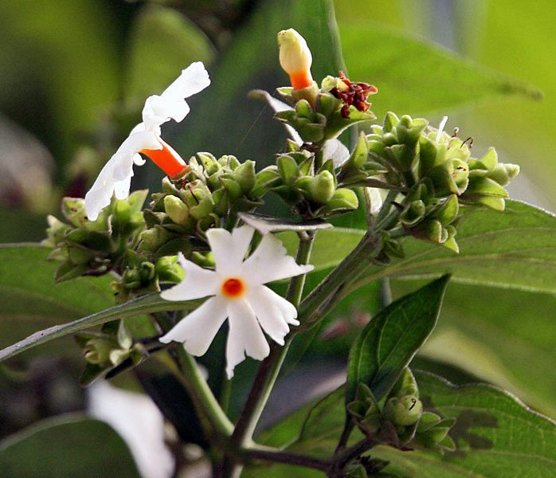

हरसिंगारNight Jasmine
Nyctanthes arbor-tristis · Oleaceae · FLR-0068

- Scientific name
- Nyctanthes arbor-tristis L.
- Family
- Oleaceae
- Hindi
- हरसिंगार
- Status here
- native
- IUCN
- not evaluated
When to look कब देखें
Present all year.
हरसिंगार / Night Jasmine
Nyctanthes arbor-tristis L. — Oleaceae
हरसिंगार (पारिजात / श्युली / नाइट जैस्मीन) — पूर्वी उत्तर प्रदेश के ग्रामीण आंगनों, मंदिर परिसरों और बगीचों में पाया जाने वाला एक छोटा, पवित्र और अत्यंत लोकप्रिय फूल देने वाला पेड़ (या बड़ा झाड़ी) है। इसकी सबसे बड़ी विशेषता इसके छोटे, तारे जैसे सफ़ेद फूल हैं जिनके केंद्र में एक चमकीली नारंगी रंग की नली (white flowers with a saffron-orange center tube) होती है। ये फूल केवल सूर्यास्त के बाद रात में खिलते हैं और अपनी मनमोहक खुशबू से वातावरण को महकाते हैं। भोर होते ही (at dawn) ये सभी फूल पेड़ से नीचे गिर जाते हैं, जिससे पेड़ के नीचे सफ़ेद और नारंगी फूलों का एक सुंदर कालीन बिछ जाता है। संस्कृत में इसे 'पारिजात' कहा जाता है और इसे देव-वृक्ष माना जाता है। इसके फूलों का उपयोग पूजा-पाठ में किया जाता है, नारंगी नलियों से प्राकृतिक केसरिया रंग बनाया जाता है, और इसकी खुरदरी पत्तियों का काढ़ा आयुर्वेद में जोड़ों के दर्द, गठिया और सायटिका (sciatica) के इलाज के लिए रामबाण माना जाता है।
Quick Identification त्वरित पहचान
| Feature | Description |
|---|---|
| Tree habit | Small tree or large shrub up to 4–10 meters high, with a rough, grey, drooping branch system |
| Leaves | Opposite, ovate, rough, and covered in tiny stiff hairs, feeling exactly like sandpaper when touched |
| Flowers | 5 to 8 lobed, pure white corolla with a bright orange-red center tube, emitting a sweet, honey-like scent |
| Fruit | Flat, heart-shaped, compressed brown capsule, splitting into two halves containing one seed each |
| Flowering phase | Flowers open at dusk (around 6–7 PM) and drop completely by sunrise (around 5–6 AM) |
Field tip: Inspect home gardens in the early morning during October. Look for a small tree with very rough leaves, under which the ground is entirely carpeted with fresh white flowers having bright orange centers. If you touch the leaves, they will feel as rough as sandpaper.
Morphology आकारिकी
Biometrics (typical measurements of mature trees in the northern Indian plains):
| Measurement | Range |
|---|---|
| Tree height | 4–10 m |
| Trunk diameter (DBH) | 10–25 cm |
| Leaf length | 6–12 cm |
| Flower diameter | 1.5–2.5 cm |
| Orange tube length | 6–8 mm |
| Capsule diameter | 1.5–2.0 cm |
Trunk and Bark: The bark is rough, greyish-green, peeling in small thin flakes. The branches are quadrangular (4-sided) when young.
Foliage: Simple, opposite leaves with a pointed tip and entire or distantly toothed margins. The upper surface is extremely rough (scabrous) due to rigid calcified hairs.
Flowers: Sessile, arranged in small trichotomous cymes. The corolla tube is bright orange, and the lobes are white, twisted in bud.
Fruit: A flat, circular or cordate (heart-shaped) capsule, green when young and turning dark brown when dry.
Associated Species / Interactions संबंधित प्रजातियाँ
- Night Pollinators: The fragrant flowers open only at night, attracting nocturnal moths, hawkmoths, and beetles that act as pollinators.
- Diurnal birds: In the morning, bulbuls and sunbirds feed on the nectar of the remaining flowers.
- Larval Host: Host to the caterpillars of the Jasmine Moth (Palpita unionalis).
Pests and Diseases कीट और रोग
- Leaf Webber: Nausinoe geometralia caterpillars web the leaves together and feed inside, causing dry patches.
- Powdery Mildew: Caused by the fungus Oidium in high humidity, creating a white powdery coating on leaves.
- Root Rot: Caused by Pythium in clay soils with poor water drainage.
Traditional and Ethnobotanical Use पारंपरिक और नृवंशवनस्पति उपयोग
- Ayurvedic Sciatica Decoction: 4–5 fresh, rough leaves are washed, crushed, and boiled in a glass of water until reduced to half. This bitter decoction (harsingar kadha) is consumed daily to treat chronic sciatica, arthritis, and fever.
- Saffron-Orange Dye: The bright orange corolla tubes are collected from fallen flowers, dried in the shade, ground, and boiled in water to yield a natural saffron-yellow dye, traditionally used to color cotton robes and puja silks.
- Sacred Puja Offerings: Unlike other flowers that cannot be offered once they fall on the ground, Harsingar flowers are considered sacred and are collected from the clean ground under the tree to make garlands for Hindu deities.
- Exfoliating Clean Scrub: Due to the extremely rough, sandpaper-like texture of the leaves, they were traditionally used in rural areas to gently polish wood or scrub stains from household copper vessels.
Expected Locally स्थानीय रूप से अपेक्षित
Not a field record. Written from published accounts for eastern Uttar Pradesh. No confirmed local sighting yet — if you have seen it, that is what the atlas needs.
अभी तक स्थानीय पुष्टि नहीं। यह विवरण प्रकाशित स्रोतों से है, किसी अवलोकन से नहीं।
A highly beloved tree grown in almost every traditional Hindu household courtyard or temple garden (pujasthali) across the Basti district. They are regularly observed in the Harraiya, Vikramjot, and Basti blocks. Residents report that during the autumn months of Ashwin and Kartik (September to November), which correspond with the Navratri festival, the harvesting of fallen harsingar flowers at dawn is a daily ritual for village women.
Distribution वितरण
Global range: Native to India, Nepal, and Thailand; widely cultivated as an ornamental and sacred tree throughout South and Southeast Asia.
In India: Found wild in dry deciduous forests of central and northern India, and cultivated universally in all states.
In Uttar Pradesh: Abundant state-wide in all gardens, temples, and forest fringes.
In Basti district / eastern UP: Widespread across all blocks.
Research Questions शोध प्रश्न
Anyone can investigate these | कोई भी इन प्रश्नों की जाँच कर सकता है
- At what exact time (minutes after sunset) do the first flower buds of Harsingar open in your garden during October? — Record bud opening times.
- At what time of the night or morning does the peak drop of flowers occur in Basti? / रात या सुबह के किस समय पारिजात के फूल पेड़ से सबसे अधिक संख्या में नीचे गिरते हैं? — Set up hourly collection sheets under the tree from midnight to 6 AM.
- Does the bitter leaf decoction lose its taste when boiled with fresh ginger or honey? — Test traditional recipe variations.
- How many Harsingar seeds successfully germinate when planted in river sand versus garden compost? — Record seedling emergence.
- Does the sandpaper-roughness of the leaves decrease when the tree is grown in heavy shade compared to full sunlight? / क्या तेज धूप की तुलना में घनी छाया में उगने वाले हरसिंगार के पत्तों का खुरदरापन कम हो जाता है? — Compare leaf textures in different light zones.
Similar Species मिलती-जुलती प्रजातियाँ
| Species | How to tell apart | comparison |
|---|---|---|
| Night-blooming Jasmine (Cestrum nocturnum) | A woody shrub; leaves are smooth; flowers are long, greenish-yellow, tube-like; fruit is a toxic white berry | रात की रानी — चिकने पत्ते, संकीर्ण नलीदार फूल |
| Wild Sage / Lantana (Lantana camara) | Has rough leaves but flowers are in colorful multi-colored heads; stems are spiny; invasive weed | लेंटाना — छोटे खुरदरे पत्ते, बहु-रंगी गुच्छे |
| Crape Jasmine (Tabernaemontana divaricata) | Has glossy, smooth leaves; flowers are pure white, star-like, lack the orange center tube; latex is present | चांदनी — चिकने पत्ते, शुद्ध सफेद फूल, दूध का स्राव |
Field rule: Small tree with square young branches, extremely rough sandpaper-like leaves, and sweet-scented white flowers with bright orange center tubes that open only at night and drop by sunrise, is the Night Jasmine.
Taxonomy & Classification वर्गीकरण
Original description. Carl Linnaeus described the Night Jasmine as Nyctanthes arbor-tristis in 1753 in his Species Plantarum (Vol. 1, p. 6). The type locality was listed as India. The genus name Nyctanthes is derived from the Greek nyktos (night) and anthos (flower). The specific name arbor-tristis is Latin for sad tree, referencing the tree's habit of dropping its bright flowers at dawn and looking dull during the day.
Subspecies. Monotypic — no subspecies are currently recognised.
Family and order placement. Placed in the order Lamiales, family Oleaceae (olive or jasmine family), subfamily Myxopyroideae.
Phylogenetic notes. Nyctanthes was historically placed in Verbenaceae due to its square stems, but modern molecular data confirms its position within the Oleaceae, showing close links to jasmines.
IUCN status rationale. Not evaluated (NE) by the IUCN Red List. It has a highly secure and stable population due to extensive cultivation in South Asia.
Photo Gallery फोटो गैलरी
References संदर्भ
- Linnaeus, C. (1753). Species Plantarum. Laurentii Salvii, Holmiae, Vol. 1, p. 6. [original description]
- Brandis, D. (1906). Indian Trees. Archibald Constable & Co., London.
- Kirtikar, K. R. & Basu, B. D. (1935). Indian Medicinal Plants. Vol. II. Lalit Mohan Basu, Allahabad.
- Rout, S. P., Kar, D. M. & Senapati, S. (2015). Nyctanthes arbor-tristis: A Review on its Phytochemistry and Pharmacological Profile. Journal of Pharmacognosy.
- World Flora Online (2024). Nyctanthes arbor-tristis taxon details.
- GBIF Occurrence Data — Nyctanthes arbor-tristis, India (2010–2025).
Source file: species/flora/trees/night_jasmine.md